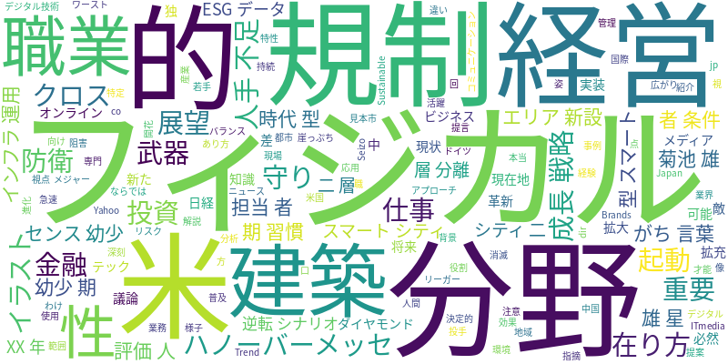

☁️ 今日のトレンドワード

📰 今日のピックアップニュース (10件)
人手不足の日本、フィジカルAIは成長戦略か？
米メディアは、人手不足が深刻な日本において、フィジカルAIの実装が成長戦略として必然であると報じています。その背景や可能性について掘り下げています。
ハノーバーメッセ、フィジカルAI拡充と防衛エリア新設
国際的な産業見本市「ハノーバーメッセ」では、フィジカルAIの活用がさらに拡大しています。新たに防衛分野向けのエリアが新設され、AI技術の応用範囲の広がりが示されています。
菊池雄星、AIも敵わない「センス」は幼少期の習慣から
メジャーリーガーの菊池雄星投手が、AIでも及ばない「センス」を磨いた幼少期の習慣について語っています。才能開花における環境や経験の重要性を伝えています。
AIでインフラ運用職は消滅？生き残るIT担当者の条件
AIの進化により、インフラ運用業務がなくなるという議論に対し、生き残るIT担当者に求められる条件を解説。AIにはない、専門知識や人間ならではの視点が重要視されています。
AI使用で評価が下がる人が言いがちな「言葉」とは
AIを効果的に活用できず、かえって評価を下げてしまう人が口にしがちな言葉を特定。AIとの向き合い方や、コミュニケーションにおける注意点を指摘しています。
AI時代、日本型スマートシティを「二層分離」で再起動
AI時代を迎えるにあたり、日本型のスマートシティを「二層分離」というアプローチで再起動させる提案。デジタル技術と地域特性を活かした新しい都市像を描いています。
金融分野におけるAI規制の在り方
金融分野におけるAIの急速な普及に伴い、その規制のあり方について議論。技術革新を阻害せず、かつリスクを管理するためのバランスの取れた規制の重要性が問われています。
ESGデータをAIで「武器」に、経営の現在地と展望
ESGデータを経営における「武器」とするために、AI活用が進んでいます。現状の活用事例と、将来的な展望について、持続可能な経営に向けたAIの役割を探っています。
AIで建築の仕事が変わる？20XX年の新職業をイラストで
AI技術が建築業界に革新をもたらし、将来的な職業の在り方を変えていく様子をイラストで紹介。20XX年の建築現場で活躍する新たな職業の姿を描き出しています。
日本は「守りのAI投資」、米中独との差と逆転シナリオ
日本はAI投資において「守り」に徹しており、米国、中国、ドイツとの差が拡大。この現状を分析し、日本がAI分野で巻き返すための「逆転シナリオ」を提言しています。
今日のAI・テック業界は、製造業におけるAI活用と、その社会実装への期待が改めて浮き彫りになりました。特に、人手不足が深刻な日本においては、フィジカルAIが単なる技術導入に留まらず、成長戦略として不可欠であるという視点が米メディアからも示されています。国際的な産業見本市でのAI技術の拡充や、建築・金融といった多岐にわたる分野での応用、さらにはESGデータ活用へのAIの貢献など、その可能性は広がる一方です。
一方で、AI時代における人間の役割や、AIに「勝る」センスの育成といった議論も並行して展開されています。AIでインフラ運用職がなくなるという言説に対するIT担当者の生き残り戦略や、AI使用で評価が下がる人の特徴など、AIとの共存・活用における課題も浮き彫りになりました。また、日本が「守りのAI投資」に陥っている現状と、国際競争力を高めるための「逆転シナリオ」の必要性も指摘されており、技術革新と戦略的投資の両輪が、今後の発展の鍵を握るでしょう。